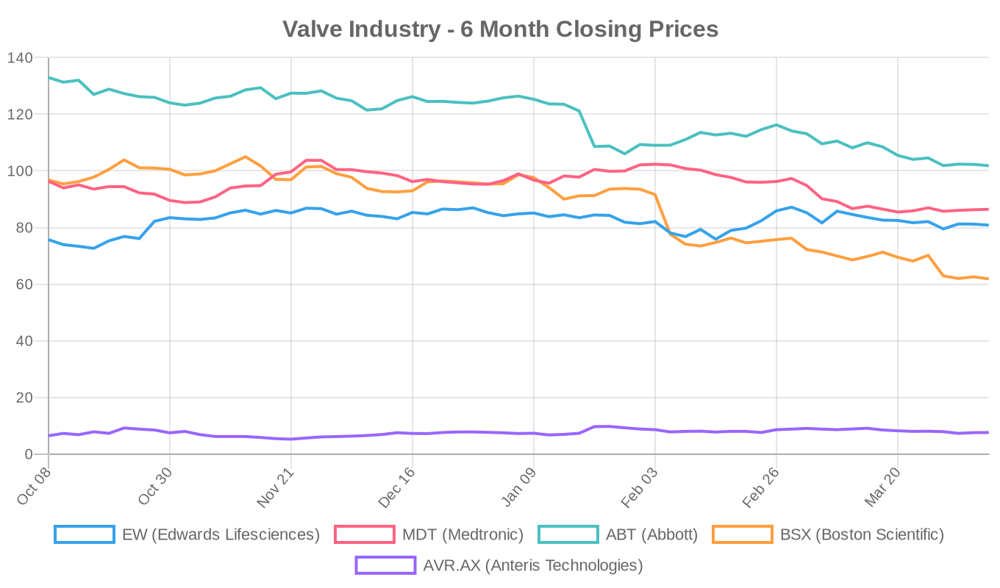
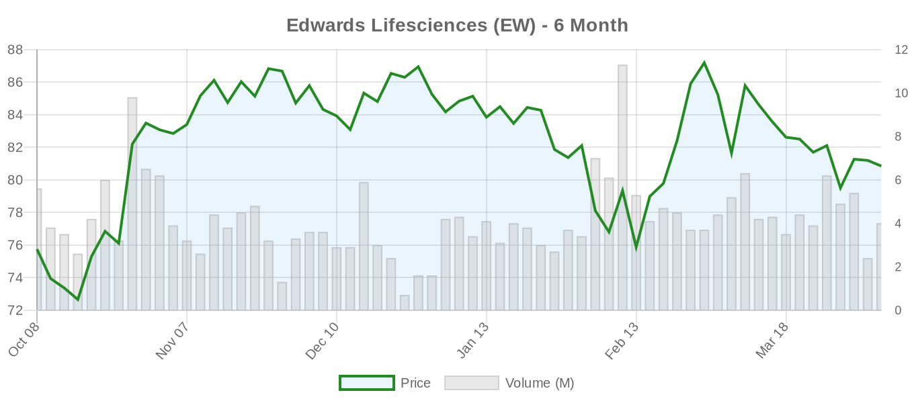
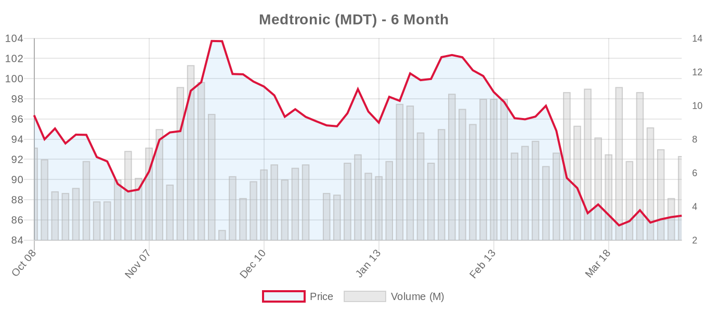
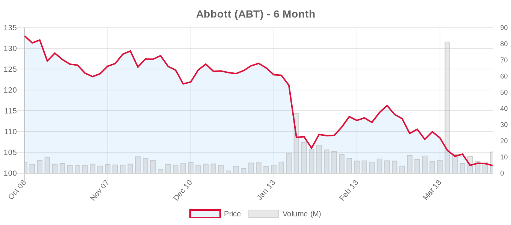
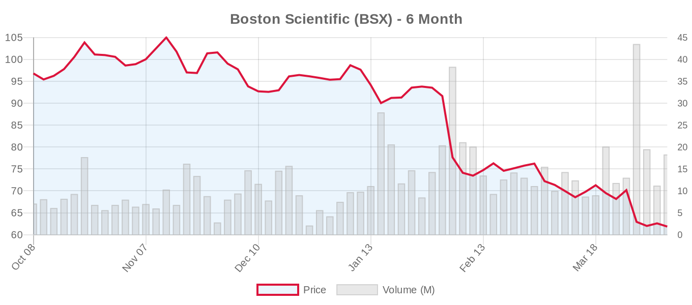
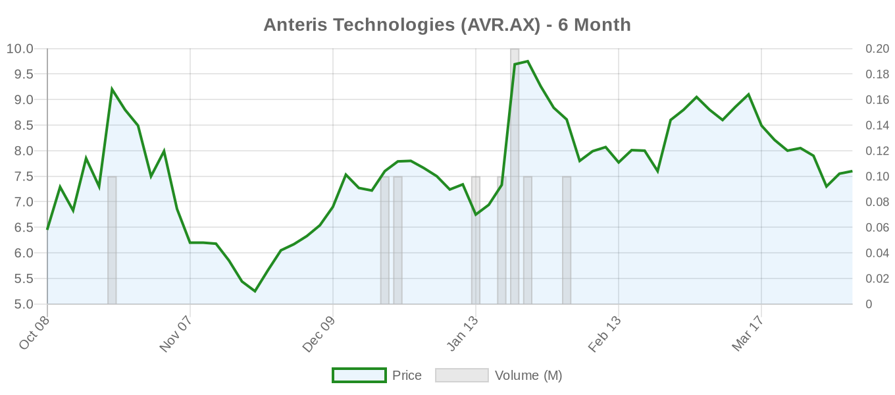

|
||||||||||
|
April 08, 2026 By E. Nolan Beckett |
||||||||||
|
||||||||||
Executive SummaryToday's structural heart landscape features emerging evidence on transcatheter tricuspid valve replacement, with TRISCEND II data hinting at a mortality benefit at 2 years — a signal that, if confirmed, could reshape the tricuspid treatment algorithm. Meanwhile, new research from JACC: Case Reports demonstrates AI-enhanced imaging for mitral TEER and a first-of-its-kind minimalist approach to tricuspid valve replacement using conscious sedation and intracardiac echo. On the aortic side, studies illuminate how cardiac damage staging predicts physical activity recovery after TAVI and how left atrial function recovers faster than structure after valve replacement. For the clinical audience: a relatively quiet Monday, but one punctuated by a significant TTVR signal from TRISCEND II that demands close reading. The 2-year mortality hint — reported by TCTMD — arrives in a tricuspid space that has rocketed from zero guideline recommendations in 2020 to Class IIa in the 2025 ESC/EACTS guidelines, largely on the strength of TRILUMINATE and Tri.Fr. If Evoque demonstrates a survival advantage over medical therapy, it would be the first transcatheter tricuspid device to do so, though we should temper enthusiasm until we see the full dataset, adjudicated endpoints, and understand the competing-risk dynamics in this elderly, comorbid population. Elsewhere, the DeviceGuide AI software for M-TEER guidance (Hahn et al.) represents a practical advance in procedural imaging, while a case report of Evoque implantation under conscious sedation with ICE alone challenges our assumptions about what's required for TTVR. Let's unpack it all. Today's Key Findings
Tricuspid Valve (TriClip, TTVR)TRISCEND II: Hints of Mortality Benefit at 2 Years[NOTABLE] TCTMD reports emerging signals of a mortality advantage with the Edwards Evoque transcatheter tricuspid valve replacement system at 2-year follow-up in the TRISCEND II pivotal trial. This is potentially practice-altering news for the tricuspid space, which has historically struggled to demonstrate hard endpoint benefits beyond quality-of-life and heart failure hospitalization reductions. Editorial context: The tricuspid transcatheter space has moved at remarkable speed — from no guideline recommendations (ACC/AHA 2020) to Class IIa (ESC/EACTS 2025) in just five years. The ESC upgrade was driven primarily by TRILUMINATE Pivotal (TriClip TEER), Tri.Fr, and earlier TRISCEND II data showing symptom and QoL improvements. However, critics — including those cautioning about therapies outpacing evidence — have rightly noted that TR interventions have not yet demonstrated mortality reduction, and the population is elderly with competing risks from right heart failure, hepatorenal dysfunction, and frailty. If TRISCEND II shows a genuine, adjudicated survival benefit, it would be the first transcatheter tricuspid therapy to do so. But several caveats are essential: (1) "hints" is not a confirmed primary endpoint hit — we need to see the full data, confidence intervals, and whether this was a pre-specified analysis; (2) TRISCEND II's earlier reports noted higher bleeding and pacemaker rates with Evoque vs. medical therapy; (3) patient selection in the trial may not reflect real-world populations. We await the peer-reviewed publication with great interest — and appropriate skepticism. Minimalist Evoque TTVR: Conscious Sedation + ICERajagopal et al. report in JACC: Case Reports the first case of Evoque transcatheter tricuspid valve replacement performed entirely under conscious sedation with 3D intracardiac echocardiography (ICE) guidance — no general anesthesia, no transesophageal echo. The patient had NYHA III symptoms from severe TR, was deemed high surgical risk, and achieved trivial residual TR post-deployment. This is a single case report, so generalizability is unknown, but it mirrors the "minimalist approach" that transformed TAVR from an OR-based procedure to a cath lab procedure performed under conscious sedation in many centers. For TTVR, the ability to avoid general anesthesia could reduce procedural risk, shorten recovery, and improve patient throughput — particularly important given the frailty of the typical severe TR population. The imaging adequacy of ICE alone for a procedure this complex will need validation in larger series. Mitral Valve (MitraClip, PASCAL, TMVR)DeviceGuide: AI-Enhanced Imaging for M-TEERHahn et al. present in JACC: Case Reports a novel AI software platform called DeviceGuide that automatically tracks the M-TEER device within 3D TEE volumes in real time. The system generates multiplanar-reconstructed images that maintain target location on rendered views, provide two-dimensional orthogonal views with device position and trajectory indicators, and continuously display the device-tissue relationship — all without manual reformatting by the echocardiographer. The authors argue this could improve safety, efficiency, and efficacy for both routine and complex cases, regardless of operator experience. This is an investigational tool — no outcomes data yet — but the concept addresses a real bottleneck: M-TEER's procedural success depends heavily on imaging quality, and imaging quality depends heavily on echocardiographer expertise. If DeviceGuide can democratize imaging quality, it could accelerate TEER adoption at lower-volume centers. That said, the structural heart community should remember that procedural simplification must not outpace operator training and patient selection rigor, particularly as ESC 2025 has now elevated TEER for ventricular SMR to Class I. Hybrid Mitral Repair: Two-Stage TEER + CABG + LAAOUchimuro et al. describe in MMCTS a creative two-stage hybrid approach for an 84-year-old man with acute coronary syndrome, ischemic MR, and chronic atrial fibrillation: initial transcatheter M-TEER followed by surgical CABG with Penditure-based left atrial appendage closure. This case illustrates the evolving interplay between transcatheter and surgical approaches — using each modality where it offers the best risk-benefit ratio in a complex, multimorbid patient. The ESC 2025 guidelines now formally recognize atrial secondary MR as a distinct entity and recommend MV surgery + AF ablation + LAAO as a Class IIa option, making cases like this increasingly relevant to clinical practice. Aortic Valve (TAVR/TAVI)LA Functional Recovery Precedes Structural Remodeling After TAVILi et al. report in Scientific Reports a prospective study of 162 severe AS patients undergoing TAVI, tracked with speckle-tracking echocardiography at baseline, 1, 6, and 12 months. Key finding: LA reservoir, conduit, and pump strain all improved significantly at 1 month and continued improving through 12 months. While the LA volume index (LAVI) also decreased at 1 month (34.3 → 28.5 mL/m²), absolute LA volumes (LAVmax, LAVmin) didn't show significant reduction until 6 months. This dissociation between functional and volumetric recovery has practical implications — STE-derived LA strain may serve as a more sensitive early biomarker of successful hemodynamic unloading after TAVI. Notably, the ESC 2025 guidelines use LAVI ≥60 mL/m² as one criterion for early intervention in asymptomatic severe primary MR, and LA dilation is increasingly recognized as a driver of atrial functional MR. Understanding LA remodeling kinetics post-TAVI could inform follow-up protocols and expectations counseling. Sex-Specific CT Predictors of Pulmonary Hypertension After TAVIBoxhammer et al. present in Insights into Imaging a retrospective analysis of 526 TAVI patients (263 male, 263 female) examining CT-derived main pulmonary artery (MPA) dimensions as predictors of pulmonary hypertension and survival. The MPA/AA (ascending aorta) ratio predicted long-term survival in men (HR 1.857, P=0.006) but showed no prognostic value in women. Overall cut-offs were MPA ≥29.5 mm and MPA/AA ≥0.76, but sex-specific thresholds differed substantially (women: MPA ≥30.0 mm, MPA/AA ≥0.86, with lower diagnostic utility). This adds to a growing literature demonstrating that one-size-fits-all thresholds in structural heart disease disadvantage women. The clinical implication: pre-TAVI CT data that are already routinely acquired could be leveraged for PH screening in men, but alternative markers are needed for women. Wearable Activity Monitoring and Cardiac Damage StagingAndroshchuk et al. publish in JAHA a study of 85 patients with severe symptomatic AS who wore Fitbit smartwatches before and 6 months after TAVI. Patients were dichotomized by echocardiographic cardiac damage staging (stages 0-2 = left-heart dysfunction; stages 3-4 = pulmonary/right-heart involvement). All patients improved in daily step count and moderate-to-vigorous physical activity (MVPA), but patients with advanced damage (stages 3-4) had lower baseline activity, lower follow-up activity, and smaller improvement in MVPA. This has implications for patient counseling and potentially for the timing-of-intervention debate: advanced extravalvular remodeling may limit functional recovery even after successful valve replacement. The ESC 2025 guidelines' move toward earlier intervention in asymptomatic severe AS (Class IIa) is partly predicated on preventing this kind of irreversible remodeling. Cardiac Imaging in Clinical Trials of Aortic Valve InterventionMengesha et al. provide a comprehensive review in Circulation: Cardiovascular Imaging on the role of echocardiography and CT in clinical trials for aortic stenosis intervention — from patient selection through procedural assessment to long-term durability monitoring. The authors emphasize multimodality imaging for diagnosing bioprosthetic valve dysfunction (differentiating patient-prosthesis mismatch, structural valve deterioration, thrombosis, pannus, and endocarditis) and advocate for standardized definitions and independent imaging core labs. This is timely given ongoing debates about TAVI valve durability — a central concern as the ESC 2025 guidelines now recommend TAVI for patients ≥70 (vs. the ACC/AHA's more conservative ≥80 threshold for TAVI preference). Standardized imaging endpoints are essential if we're to meaningfully compare SVD rates between TAVI and SAVR at 10+ years. Concomitant Lung Cancer and CVD: TAVI's Role in Staged ManagementKanzaki and Okami review in Lung Cancer Management strategies for managing patients with coexistent lung cancer and cardiovascular disease, highlighting TAVI as an enabling technology for staged treatment in frail patients. The review underscores how advances in transcatheter therapies (TAVI, TEVAR) have expanded surgical options for oncologic resection by allowing cardiac stabilization without the morbidity of open-heart surgery. This is an underappreciated use case for TAVI that falls outside traditional guideline frameworks but affects a growing population of elderly patients with competing pathologies. TAVR and TEVAR: Staging Decisions for Combined Aortic Valve + Descending Aortic DiseaseAhmed, Sultan, and Sá contribute an editorial in JACC: Case Reports addressing the clinical dilemma of patients with concomitant aortic valve stenosis and descending thoracoabdominal aortic disease. The question of whether to stage TAVR and TEVAR or perform them simultaneously reflects the growing complexity of percutaneous management in patients with multilevel aortic pathology — a scenario that would have been purely surgical territory a decade ago. TAVR Cost Comparison Commentary — JapanSiam et al. provide commentary in General Thoracic and Cardiovascular Surgery on a prior single-center Japanese analysis comparing hospital procedural costs of SAVR vs. TAVR in low-risk isolated AS. Cost analyses are increasingly relevant as the TAVI-eligible population expands downward in risk, and the ESC 2025 guidelines' lowering of the TAVI age threshold to ≥70 will accelerate this debate globally. Device & TechnologyDeviceGuide AI for M-TEER GuidanceAs detailed above, the DeviceGuide AI platform (Hahn et al., JACC: Case Reports) represents a meaningful step toward automated procedural imaging in structural heart interventions. The system's ability to continuously generate consistent device-tissue images without manual reformatting could reduce imaging-related procedural variability — a recognized bottleneck in M-TEER. This should be evaluated alongside the Mengesha et al. review on standardized imaging in valve trials: as we demand more from imaging endpoints, AI-assisted tools may become essential infrastructure. TMC Medical Minutes — TAVRKXII's TMC Medical Minutes featured a TAVR educational segment, reflecting continued public media interest in transcatheter valve therapies. Patient-facing educational content is valuable but should be monitored for accuracy — particularly as the nuances of SAVR vs. TAVI selection (age thresholds, durability concerns, bicuspid valve considerations) are frequently oversimplified in lay media. Surgical vs. Transcatheter ComparisonsNo head-to-head comparative studies were published today, but several items touch on the SAVR-TAVI boundary. The Kanzaki review highlights TAVI's role in staged management of patients with concomitant lung cancer, while the Japanese cost commentary underscores the health-economic dimension of the choice. The Mengesha imaging review in Circulation: Cardiovascular Imaging is particularly relevant to the durability debate: without standardized SVD definitions and independent core lab adjudication, we cannot meaningfully compare long-term outcomes between surgical and transcatheter bioprostheses. This is the Achilles heel of the ESC 2025 guidelines' decision to lower the TAVI age threshold to ≥70 — the durability data supporting that decision, while reassuring at 5-10 years, rely on variable SVD definitions across trials. As Mengesha et al. argue, we need to do better. Financial AnalysisThe structural heart device sector enters a critical earnings season under significant market pressure. Edwards Lifesciences reports on April 22 and Abbott on April 16, making the next two weeks pivotal for the space. The broader medtech landscape is contending with tariff uncertainty, healthcare utilization questions, and the macro headwinds that have punished growth stocks more broadly. The most striking development is Boston Scientific's dramatic 36% decline over six months — the largest drawdown among the structural heart pure-plays — which has brought shares to their 52-week low at $60.90. This selloff appears driven by broader market rotation out of high-multiple medtech names rather than BSX-specific structural heart concerns (their ACURATE neo2 and WATCHMAN franchises remain competitive), but the magnitude is notable given the company's strong "buy" consensus. Abbott's 23% six-month decline similarly reflects macro pressure rather than franchise deterioration, though the TriClip Japan post-approval study initiation (see Clinical Trials below) signals continued international expansion of the tricuspid portfolio. Rathbones Group's $1.42M position in Edwards Lifesciences is a modest institutional filing but reflects continued buy-side interest despite the company trading well below its analyst consensus target of $96.85. The TRISCEND II mortality signal, if confirmed, could be a meaningful catalyst for Edwards, which markets the Evoque system. Edwards' upcoming Q1 earnings call on April 22 will likely address Evoque commercial trajectory, PASCAL pivotal trial enrollment, and SAPIEN M3 TMVR development. Medtronic, with its Intrepid TMVR platform still recruiting and Evolut Low Risk long-term data forthcoming, faces a more complex narrative but trades at a significant discount to its analyst target ($109.92 vs. $86.42 current). Valve Industry Stocks Edwards Lifesciences (EW)
Medtronic (MDT)
Abbott (ABT)
Boston Scientific (BSX)
Anteris Technologies (AVR.AX)
Private Companies to Watch: JenaValve Technology (ALIGN-AR LVAD Registry actively recruiting, n=50 — addressing the unmet need for TAVI in aortic regurgitation with the Trilogy system), Meril Life Sciences (Myval balloon-expandable TAVR — demonstrated noninferiority in LANDMARK trial), and J Valve Technology remain private with no public stock data available. Market Outlook: The structural heart sector faces a pivotal two weeks with Abbott (April 16), Edwards and Boston Scientific (both April 22) all reporting Q1 earnings. The wide gap between current prices and analyst targets across the group (20-62% implied upside) suggests either significant macro-driven undervaluation or upcoming estimate revisions. The TRISCEND II mortality signal, if elaborated upon during the Edwards earnings call, could catalyze renewed interest in the tricuspid therapy space. The key question for the sector remains whether procedure volume growth — driven by expanded indications in the ESC 2025 guidelines (TAVI at ≥70, TEER Class I for SMR, transcatheter tricuspid at IIa) — can offset the margin pressures and macro headwinds weighing on all medtech names. Clinical Trial UpdatesAortic Valve Trials
Mitral Repair Trials
Mitral Replacement Trials
Tricuspid Repair Trials
Tricuspid Replacement Trials
Other Relevant Trials
Preprint HighlightsThe sole preprint today — molecular identification of mobatviruses in Lao PDR bat populations — is outside the structural heart domain. No structural heart or valve-related preprints were identified today. Social & Conference HighlightsNo major conference activity or notable social media discussions identified today. The structural heart calendar is relatively quiet ahead of the upcoming earnings season, with attention focused on the approaching ACC.26 Scientific Sessions where additional TRISCEND II and TRILUMINATE data may be presented. Looking Ahead: All eyes are on Edwards Lifesciences (April 22) and Abbott (April 16) earnings for the next structural heart catalysts. The TRISCEND II mortality signal is the day's most important development — if validated, it would mark a watershed moment for the tricuspid transcatheter space. But as always in structural heart disease, the devil is in the details: we need full data, not hints. Tomorrow we'll be watching for any additional TRISCEND II disclosures and continued clinical trial activity across the space. — E. Nolan Beckett | The Valve Wire |
||||||||||
|
|
||||||||||
|
||||||||||
|